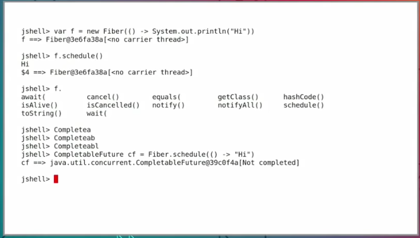
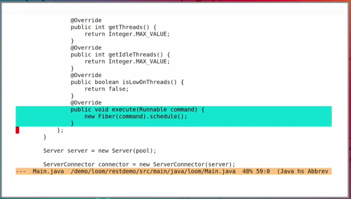
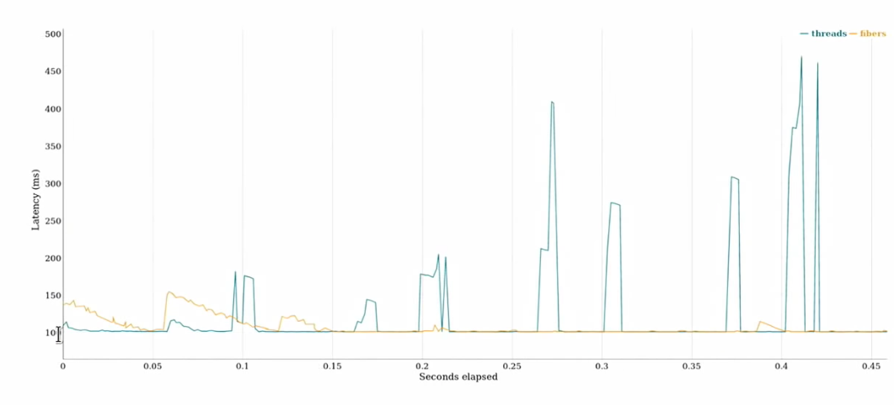
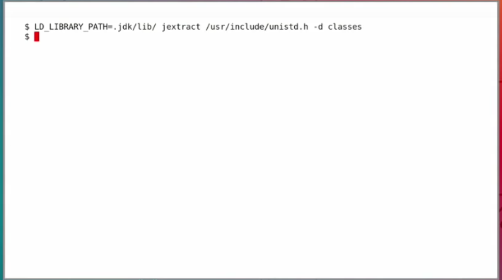
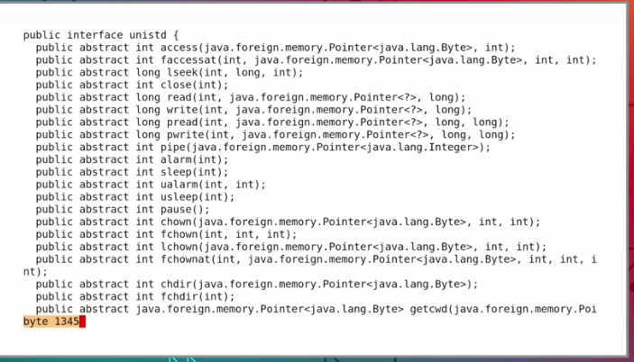
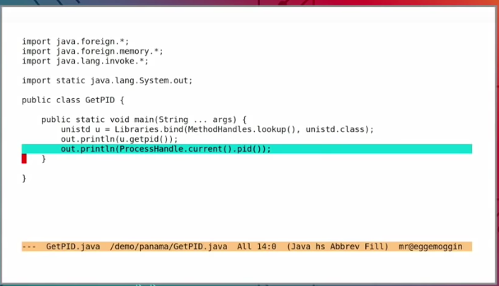
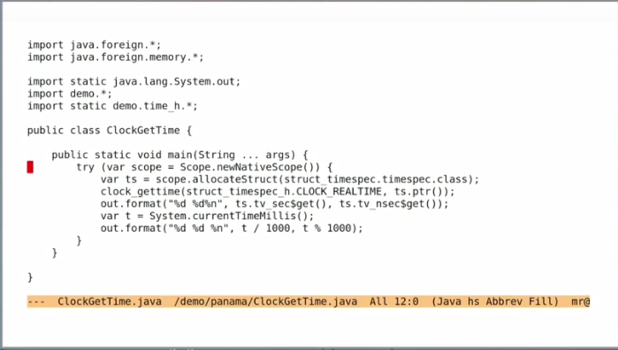
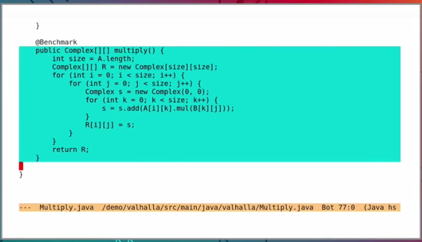

在10月22的 Oracle Codeone大会上，Java平台的首席架构师 Mark Reinhold 做了The Future of Java is Today的演讲， 回顾了最近Java的几个版本的新的功能，Java的每年两次的发布周期， 澄清了关于发布流程和Java版本的几个误区，最后花了很大的篇幅介绍了未来Java几个令人非常期待的几个孵化中项目，可以为Java带来更好的生产力、性能和可扩展性。我整理了这四个项目相关的知识，你可以提前了解到Java未来的这些酷炫的特性。

Mark Reinhold 我不多介绍了， 之前要了解Java的未来动向看Java之父James Gosling， 他离开Oracle之后想了解Java的动向就看 Mark Reinhold。
Project Amber
提供面向生产力的Java特性， 比如字符串字面值、switch表达式、模式匹配、record等
这个项目包含很多Java语言特性的新功能。
包括：
正在实现的:
- JEP 302 Lambda Leftovers: 对lambda功能的补强， 比如下划线变量等
BiFunction<Integer, String, String> biss = (i, _) -> String.valueOf(i);, lambda参数的Shadowing,消除一些歧义等修补工作 - JEP 305 Pattern Matching: 这个功能非常好,Scala和kotlin中的模式匹配非常强大，这个jep提供了类似的功能，配合switch和record,可以大大简化条件分支的处理，如:
|
|
数据类,一行定义，省去了字段、字段访问方法和hash、equals、toString等方法，定义ValueObject简化到家了：
|
|
- JEP 325 Switch Expressions (preview, JDK 12): 当前的switch是什么， 语句。这个jep扩展switch,并且可以作为表达式使用:
|
|
- JEP 326 Raw String Literals (preview, JDK 12): 这个很多语言中都实现了，可以更好的书写字符串字面值， 尤其在正则表达式中处理很多转义符的时候，和Go类似：
|
|
- JEP draft 8209434 Concise Method Bodies: 正常的方法定义以大括号包裹，这个特性提供了类似Lambda表达式简化方式的形式，直接单行定义方法体, 类似C#和kotlin的特性：
|
|
已发布的:
- JEP 286 Local-Variable Type Inference (var) (JDK 10): 本地变量的类型推断， 也就是使用
var定义变量,有些同学已经用起来了，非常的方便，有点类似动态类型的语言，感觉虽然还没有达到Scala那么灵活，已经很不错了 - JEP 323 Local-Variable Syntax for Lambda Parameters (JDK 11): 对本地变量的类型推断的加强，用在Lambda表达式中。
暂时搁置的:
- JEP 301 Enhanced Enums.
总之，每一个特性都可以大大简化我们的开发，让Java更像一个"现代的"编程语言。
Project Loom
提供一个轻量级的用户态的纤程，叫做
fiber,更加简化并发编程，而且更有效
这个特性多年前我介绍过: https://colobu.com/2016/08/01/talk-about-quasar-again/,当时它还像一个玩具，开发的时候很麻烦，而且有一些坑。作者后来负责这个jep，可以很好的从java实现的角度去实现fiber,所以很是期待。

Mark Reinhold 首先使用jshell演示了fiber的使用，一两行程序就可以做到，我觉得方便性可以和goroutine相媲美了。他接着使用一个restful的例子比较了Thread和Fiber的性能， restful服务收到请求后暂停100毫秒，模拟一个慢的io操作，结果显示Thread很很多几百毫秒的尖峰，而fiber在预热之后一直稳定在100毫秒。 这绝对是Java程序员值的关注一个新特性。

例子使用jetty做服务器，线程池执行命令的时候让fiber去调度，这种方式对现有的代码改动很小。

我比较关注的是如果它的内部调度算法怎么实现的，另外，一个包含复杂业务完成时间较长的fiber是否能被调度器自动调度，以便使用有限的线程调度其它的fiber， 类似goroutine在系统调用的时候自动插入检查点。
Project Panama
提升JVM和外部（非java）代码和数据联系
当然，这个项目不仅仅是简化JNI的开发，而且提供了很多的特性：
- native function calling from JVM (C, C++), specifically per JEP 191
- native data access from JVM or inside JVM heap
- new data layouts in JVM heap
- native metadata definition for JVM
- header file API extraction tools (see below)
- native library management APIs
- native-oriented interpreter and runtime “hooks”
- class and method resolution “hooks”
- native-oriented JIT optimizations
- tooling or wrapper interposition for safety
- exploratory work with difficult-to-integrate native libraries

Mark Reinhold在演讲中举了两个例子，首先是为 POSIX 操作系统 API 的头文件unistd.h中的函数生成Java的可访问代码。
jextract工具会生成一堆的函数和类型，关键这些是从c的头文件中自动生成的，你不必费劲心思去自己设计类型和方法了。这一点比Go语言中的CGO要方便多了，快捷度可以和C#互操作性相媲美。
所以以后你要是想从Java中访问C的链接库，可以使用jextract一步生成，

调用方法也很方便。
另一个例子是调用C标准库time.h中的clock_gettime函数，它的参数需要struct类型，使用上面相同的手段可以生成访问类：

当然这两个例子只演示了这个项目的一个功能，更多的功能我们可以持续关注。
Project Valhalla
包含两个feature: 值类型和基本类型的泛型。
- 值类型：提供不可变类型和非引用类型的支持。不可变类型在Scala中很常用，java中也会引进这中类型。使用这种类型有很多好处，一个就是可以显著地提高性能，因为数据不可变，你也不必担心同步更新的问题。
- 基本类型的泛型: 为primitive type提供泛型的支持，不必再进行装箱开箱操作。

Mark Reinhold用一个复数矩阵相乘的例子来测试，测试工具使用JMH。
首先是正常的public class Complex {...}类，然后改成值类型public value class Complex{...}再次测试，结果显示，
正常测试花费3.6秒内存分配3.7G；值类型则只需要0.3秒花费3.8M左右，效果惊人！
目前这些特性还在开发之中，Mark Reinhold用java12 + 这些项目已经能跑一些例子了，我们可以期待不远的将来能在Java中使用到这些美妙的特性。